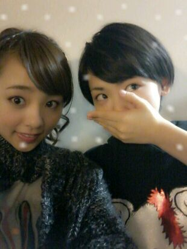
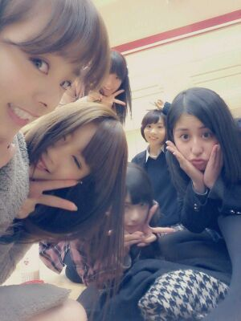

ハローろってぃ-だよ♪♪
生駒ちゃん★★...
２日遅れちゃったけどさあ、
17歳の
お誕生日おめでとう(〃ω〃))/
えいとぉ〜〜
なぜ遅れたかというとぉ〜
メール入れたつもりが
入れてなくてぇ〜
タイミングをのがしてしまい,.
(TT)
ならブログに書いちゃおうと
思いまして(* '' *)笑
書きます !
その前にDO---N !!!
生駒とのツーショット♪

生駒ちゃんは
すっごいイケメンで
笑ったらめっちゃ
笑顔が可愛いとゆうか
目がキラキラぁ〜
ってするところが
大好きだよ (・∀・)!
イケメンやけど
たまに冗談まぢりで
泣いてわめくところが
かわいい *^^*
その姿をよく
見守っています ☆笑
とにかくまひろは
生駒のこと好きだよ。
性格とかキャラとか
考え方とか 飾らない所がさっ /
あと、シュットしたアゴ様☆☆
輪郭イケメン!!
あとさっ、
まひろの姉のことを
いつもカッコいいカッコいいと
言ってくれて
ありがとうっ(*^^*)
そうやって家族のことまで
よく言ってくれて
嬉しいキモチになるよ☆
ではでは ノシ
